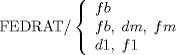

| 6.4. Special Feedrate Option | ||
|---|---|---|
 | Chapter 6. Postprocessor Statements |  |
| 6.4. Special Feedrate Option | ||
|---|---|---|
| | Chapter 6. Postprocessor Statements | |
The majority of the postprocessor words discussed in this section have no effect on the operation of the basic processor. They are simply transmitted to the postprocessor, which performs the necessary calculations to achieve the desired results.
The one major exception to the above general rule is a special feed rate option.
The general format used to exercise this option is:

The significance of each of these three statement formats is:
FEDRAT/ fb
The desired feed rate is fb, and it should be maintained constant at fb until respecified. This is a normal feed rate condition.
FEDRAT/ fb, dm, fm
The basic feed rate is to be fb. However, at a distance dm from each check, surface, the feed rate is to be changed to fm. After the check surface is reached, the feed rate reverts to fb. This is a modal override condition.
FEDRAT/ d1, f1
The previously specified basic feed rate is to be used until distance d1 from the check surface, at which time the feed rate is changed to f1. The basic feed rate is to be restored after the CS is reached. This is a one-shot override. That is, the feed rate change is to take place only for the next check surface approach. Thereafter, the processor reverts to whatever mode was previously in effect, either basic only or modal override.
The following rules apply to the special feed rate option.
Feedrate overrides occur only as check surfaces are approached, that is, as the result of GOLFT/, GORGT/, GOFWD/, GOBACK/, GOUP/ or GODOWN/ commands. GO/, GOTO/, GODLTA/ ,OFFSET, and POCKET/ motions will not be affected by the feed rate overrides.
The distance from the check surface (dm or d1) at which the feed rate change is to occur may in some cases be greater than the total distance to the check surface for a given cut sequence. (A cut sequence is defined as the resultant motion from a single GOXXX command.) If this occurs, the processor will change the feed rate before the entire cut sequence, and the total motion for that sequence will be at the appropriate fm or f1 value. No diagnostic message is issued.
The basic feed rate fb may be established either with the FEDRAT/ statement or by tagging the motion commands FROM/, GOT, GODLTA, or GOXXX as described in Section 4.1, Section 4.2, Section 4.3, and Section 5.7. Any such basic feed rate specification destroys a modal override condition, and restores a normal condition.
The distance from the check surface at which the feed rate is to be changed must be short enough that no more than 70 cut vectors (35 if MULTAX is in effect) are required to reach the check surface after the feed rate change occurs. If this condition is not met, the feed rate change will occur closer to the check surface than specified. No diagnostic message is given.
| |  | |
| 6.3. Fixed-Field Words |  | Chapter 7. Special Words in the APT Language |